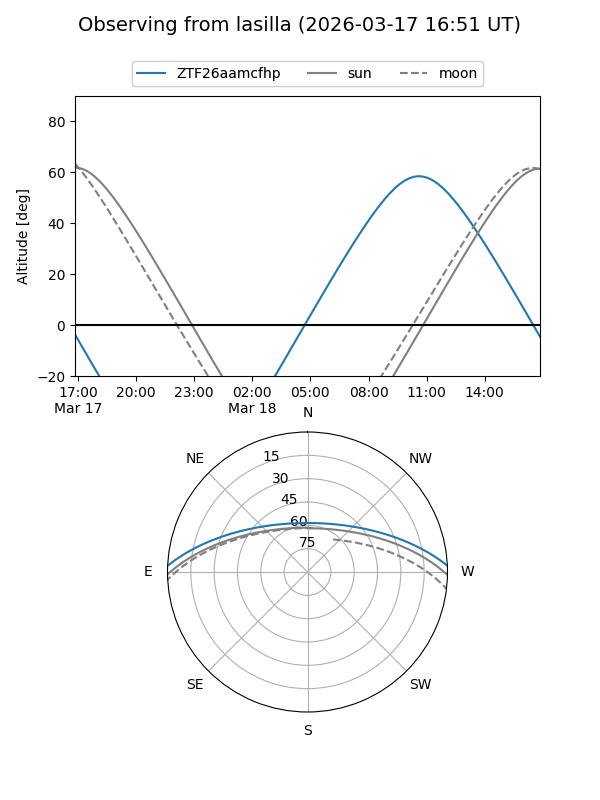
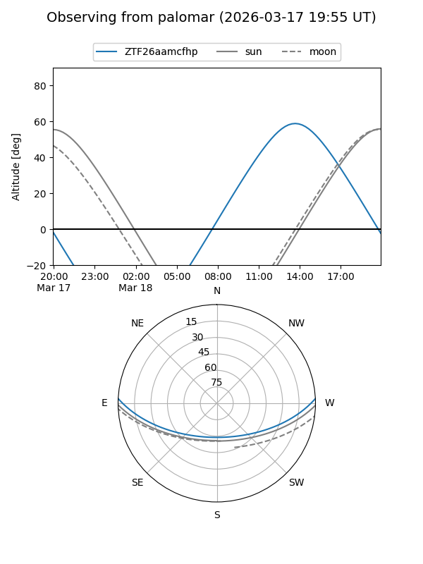

ZTF26aamcfhp
Target ZTF26aamcfhp at 2026-03-18 14:38
Aliases and brokers:
FINK: link
Lasair: link
ALeRCE: link
alt names
ZTF26aamcfhp (ztf,fink_ztf)
Coordinates:
equatorial (ra, dec) = 263.9987,+2.26718
equatorial (HMS+DMS) = 17:35:59.69,+02:16:01.85
galactic (l, b) = (26.1719,+17.78941)
Flags:
Photometry:
last ztfg=17.51
1 ztfg detections
Lightcurve
Visibility


Additional plots